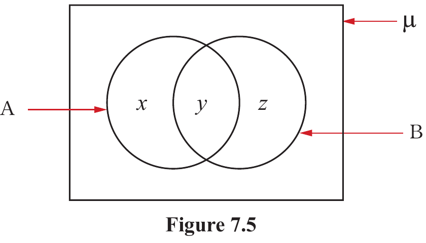

In general, the number of elements in two sets is connected by the formula:
The formula can be verified using a Venn diagram as follows:

Let the number of elements in each region be x, y, and z as shown in Figure 7.5. The following equations can be obtained:
n(A) = x + y
n(B) = z + y
n(A) + n(B) = (x + y) + (y + z)
= (x + y + z) + y
Therefore,